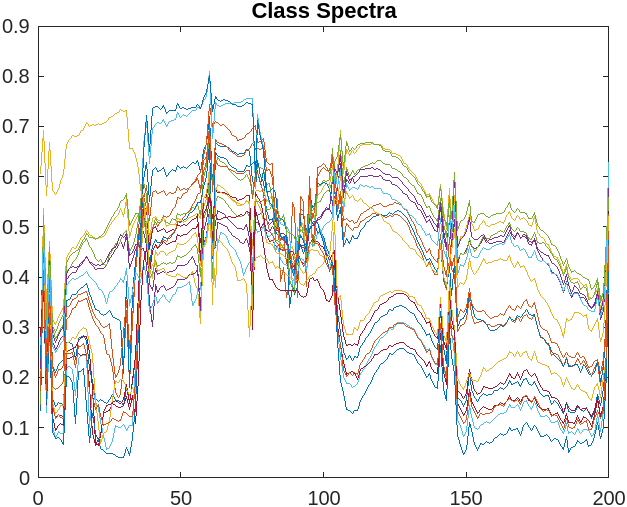
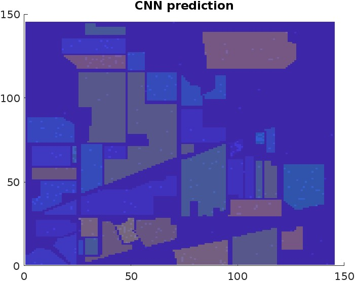
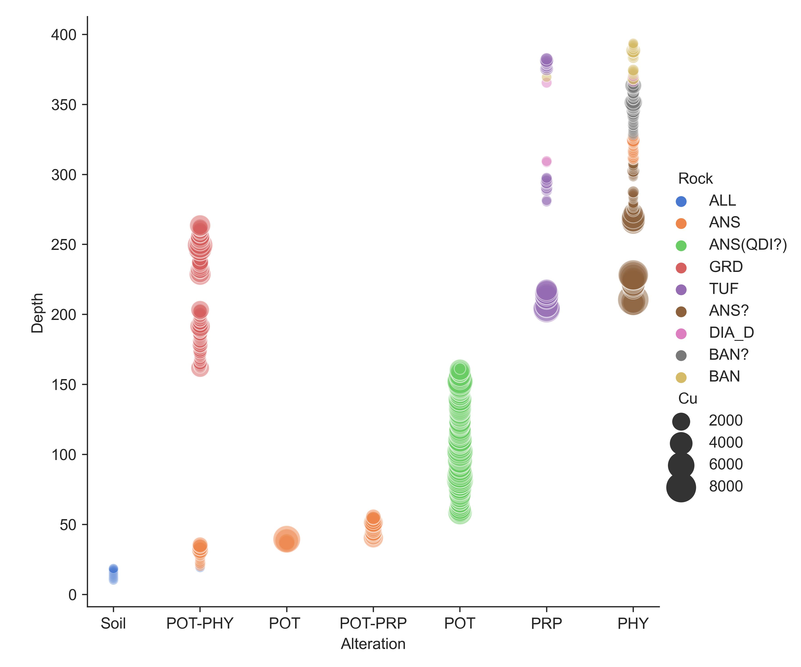
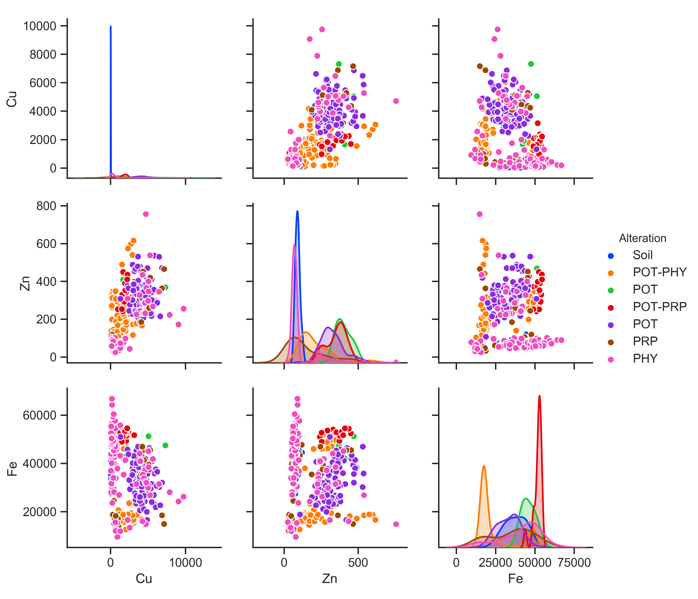
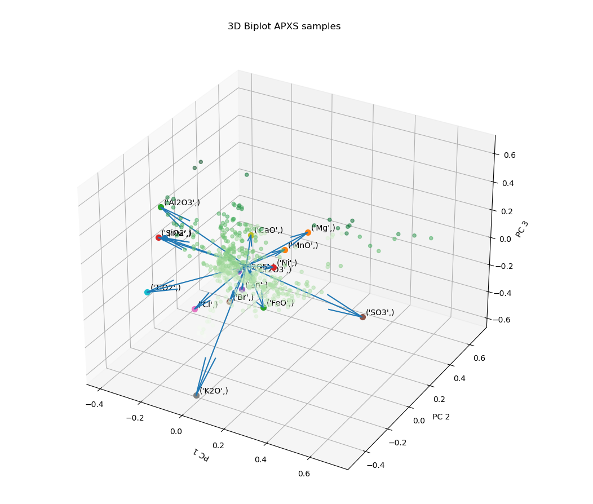

About Me
Hey, there! My name is Morteza Safari and I am currently finishing my Graduate degree in the planetary geosciences at Stony Brook University. My never ending passion for Science and Engineering has driven me to explore several fields in Science and Engineering with one thing in common "Geospatial Data". With a solid experience in Remote Sensing and spatial data processing both in academia and industry, combined with my coding skills, I am ready to take on my next role and collaborate with you.
Projects
Remote Sensing Project
Multispectral Mapping of Land Surface
Undergradute thesis project 2016- Worked in the Physical Intelligence Department with Sinan Özgün Demir and Alp Can Karacakol on a project about 3D printing and heat‑assisted magnetic programming of soft machines.
- Updated a ROS package for converting 3D motion controller events to ROS messages so that it synchronously operates at any given loop rate.
- Implemented an Arduino Mega driver for controlling a fluid dispenser, a laser, thermocouples, and a coil set. Updated ROS nodes for parsing G‑codes and controlling stage movement and built the ROS‑Arduino communication network to simulate a 3D printing and magnetic programming process.

Spectral Classification
Fuzzy C-means
October 2021 - Present Geological units & NDVI- Currently working with Assoc. Prof. Ali Emre Pusane on the project “Design and Implementation of Molecular Communication Systems Using Index Modulation” under the TÜBİTAK 2247‑C Intern Researcher Scholarship Program (STAR).
- Simulated the Brownian motion of molecules in a SISO MCvD system and predicted simulation parameters such as receiver radius, diffusion coefficient, and transmitter‑receiver distance using CNNs with Python.
- Plotted the arrival of molecules per symbol duration in a SISO MCvD system using Binomial, Poisson, and Gaussian model approximations with MATLAB.
-
Ran Monte Carlo simulations of the Gaussian model to encode/decode randomized binary sequences in a SISO
MCvD system using BCSK modulation technique and calculated the bit error rate (BER) on Z‑channel.
Geological Mapping
River Basin
October 2021 - Present Geological units & NDVI- Currently working with Assoc. Prof. Ali Emre Pusane on the project “Design and Implementation of Molecular Communication Systems Using Index Modulation” under the TÜBİTAK 2247‑C Intern Researcher Scholarship Program (STAR).
- Simulated the Brownian motion of molecules in a SISO MCvD system and predicted simulation parameters such as receiver radius, diffusion coefficient, and transmitter‑receiver distance using CNNs with Python.
- Plotted the arrival of molecules per symbol duration in a SISO MCvD system using Binomial, Poisson, and Gaussian model approximations with MATLAB.
-
Ran Monte Carlo simulations of the Gaussian model to encode/decode randomized binary sequences in a SISO
MCvD system using BCSK modulation technique and calculated the bit error rate (BER) on Z‑channel.

Hyperspecral Unmixing
Tree Classification
January 2022 - February 2022 ff Dataset- Implemented common NLP tasks using transformers such as named‑entity recognition (NER), part‑of‑speech (POS) tagging, sentiment analysis, text classification, and extractive/generative question answering.
- Built a generative question answering system via Dense Passage Retrieval (DPR) and Retrieval‑Augmented Generation (RAG) using the Haystack framework with Python.
- Worked on a custom Turkish open‑domain question answering system by fine‑tuning a BERT base model transformer. Evaluated the exact match and F1 scores using different Turkish data sets and compared the evaluation results.
|  |  |
Data Visualization
SCADA Engineering Intern
Master Thesis Project Sonajil Porphyry- Designed GSM/GPRS‑based electrical control panels that are connected to local water pump automation systems. Pump station panels use digital output data received from the SCADA control center via RF transmission to control valves and pumps. Tank station panels are charged from the PV system and refill water tanks by signaling the pump station panel when the float switch is activated.
- Implemented motor control circuits by reading their PLC ladder diagrams and analyzed the EPLAN project documentation, HMI, and hardware components of an RTU panel.
|  |  |
Data Analysis.
Mars Exploration Rover
APXS APXS- Designed numerous analog circuits such as voltage‑mode controlled buck converter, phase‑shifted full‑bridge isolated DC‑DC converter, and EMI filters with LTspice. Integrated these circuits and implemented a 320 W power distribution unit to be used in a radar system’s power circuit board.
- Researched real‑world compatible electronic components to be used in such circuits including GaNFETs, high‑side gate drivers, and Schottky diodes.
- Assembled PCBs of both common and differential mode filters and used VNA Bode 100 to measure the cut‑off frequencies. 
Publications
Peer Reviewed Publications
- Surface Conditions and Resource Accessibility at Potential Artemis Landing Sites 007 and 011
- Temperatures of the Lacus Mortis Region of the Moon
- The Scientific Value of a Sustained Exploration Program at the Aristarchus Plateau
- Geological Characterization of Chandrayaan-2 Landing Site in the Southern High Latitudes of the Moon
Non-Peer Reviewed Publications
- Space Weathering Across the Solar System: Lessons from the Moon and Outstanding Questionsn
- Mission to Characterize Volatiles in Old, Cold, Permanently Shadowed Regions on the Moon
Abstracts
- Brewing Machine Learning Models for Accurate Analysis of Current and Future Mission Datasets
- Procedure Standardization for Toolbox for Research and Exploration (TREX) Field Data Analysis
- Terrestrial Analog Analysis: Mineralogical Evaluation Within the Visible and Near-Infrared
- Utilizing a Hyperspectral Camera for Field Surveys During the TREX Field Mission
- Geological Autonomous Rover Science in the Field: Yellow Cat
- A Holistic View of Gruithuisen Domes — Silicic Constructs on the Moon
- Temperatures and Thermophysical Properties of the Lacus Mortis Region of the Moon
- Geological Diversity at Two Potential Landing Sites in the Lunar South Pole
- Episodic Volcanism and Fluvial Activities in a Floor-Fractured Crater at the Flanks of Arsia Mons
- Gerard Q Crater Region, Moon: KREEP Induced Volcanism in Mare-Highlands Boundary?
- Geological Analysis and Possible EVA Targets for an Artemis III Landing Site Bounded by Shackleton and Slater Craters
- Artemis III EVA Opportunities on the Lunar Farside near Shackleton Crater
- Artemis III EVA Opportunities on the Rim of de Gerlache Crater
- Alternative Artemis III EVA Opportunities near de Gerlache Crater
- Investigation of Variation in Christiansen Feature with Albedo on the Moon Using the Diviner, M3, and Kaguya Datasets
- Global Distribution and Characteristics of Domical Craters on the Moon
News
Skills
Python
- Exploratory Analysis (Advanced; Pandas, Numpy)
- Data Processing - Cleaning, Value Imputation,Feature Selection,Feature Engineering (Intermediate; Pandas, Scikit-Learn)
- Data Visualization (Intermediate; Matplotlib, Seaborn, Bokeh)
- Hypothesis Testing - Parametric and Non-Parametric (Intermediate; Pandas, Scipy)
- Image Processing - 2-D and N-D images, Spatial Analysis (Advancede; PIL, GDAL, Spectralpy, Scipy, Scikit-Learn)
- Machine Learning - Unsupervised(Clustering), Supervised(Regression, Classification, Ensemble), Cross-Validation (Advanced; Scikit-Learn)
- Deep Learning - ANN, CNN (Beginner; Tensorflow, Keras)
SQL
- PostgreSQL (Intermediate)
- Joins (Intermediate)
- Querying - Simple, Nested, Common Table Expressions, Window Functions (Intermediate)
Matlab
- Data Analysis - Array Manipulation (Intermediate)
HTML and CSS
- Code Manipulation (Beginner; Built this website through that)
ArcMap/QGIS
- Proficient - Raster and Vector Manipulation, Mapping
ENVI
- Proficient - Spectral Analysis of Multispectral and Hyperspectral Datasets
ISIS3/ASP
- Data Preprocessing and DTM building